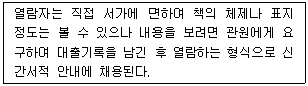
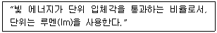
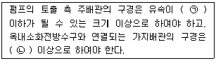
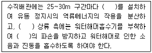
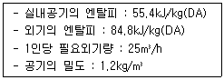
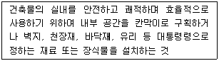
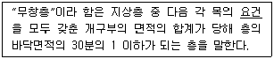
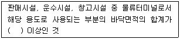
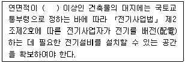

건축설비산업기사 (2019-03-03 기출문제)
1과목: 건축일반
1. 2가지 음이 동시에 귀에 들어와서 한쪽의 음 때문에 다른 쪽의 음이 작게 들리는 현상을 무엇이라 하는가?
- 명료도
- 정재파 현상
- 마스킹 효과
- 반향
(정답률: 81%)

2. 전시장의 자연채광 방법 중 지붕을 통해 들어온 자연광을 지붕과 천장사이에서 조정하여 실내전체를 조명하는 형식은?
- 측광 형식
- 정광형 형식
- 고측광 형식
- 정측광 형식
(정답률: 65%)
3. 다음과 같은 특징을 갖는 도서관의 출납 시스템은?

- 자유개가식
- 안전개가식
- 반개가식
- 폐가식
(정답률: 77%)
4. 상점의 진열장 배치에서 부문별의 상품진열이 용이하고 대량판매 형식이 가능한 형태로 주로 침구코너, 식기코너, 서점 등에서 사용되는 것은?
- 환상배열형
- 굴절배열형
- 직렬배열형
- 복합형
(정답률: 73%)
5. 석조건축물의 장점으로 옳지 않은 것은?
- 외관이 장중·미려하다.
- 마모에 대한 저항성이 크다.
- 내화적이다.
- 가공이 쉽고 비교적 저렴하다.
(정답률: 85%)
6. 다음에서 설명하는 빛의 단위는?

- 조도
- 광도
- 광속
- 휘도
(정답률: 64%)
7. 철근콘크리트구조에서 건조수축이나 온도변화에 의해 발생한 균열에 저항하기 위해 배근하는 것은?
- 주근
- 배력근
- 스터럽
- 띠철근
(정답률: 66%)
8. 벽이나 기둥모서리를 마모로부터 보호하기 위해 사용하는 철물은?
- 논슬립
- 코너비드
- 도어체크
- 피벗힌지
(정답률: 83%)
9. 판보에서 웨브에 스티프너를 설치하는 가장 주된 목적은?
- 웨브판의 좌굴 방지
- 플랜지의 처짐 방지
- 플랜지의 부식 방지
- 철근의 배근 용이
(정답률: 77%)
10. 호텔의 동선계획으로 옳지 않은 것은?
- 고객동선과 서비스동선이 교차되지 않도록 한다.
- 숙박고객과 연회고객의 출입구는 분리하는 것이 좋다.
- 고객동선은 고객이 원하는 장소에 갈 수 있도록 명확하게 하는 것이 좋다.
- 숙박고객이 프런트를 통하지 않고 주차장으로 갈 수 있도록 하는 것이 좋다.
(정답률: 87%)
11. 다음 각 구조형식에 관한 설명으로 옳지 않은 것은?
- 철골철근콘크리트구조는 철골을 중심으로 그 주위를 철근으로 둘러싸는 구조이다.
- 트러스구조는 각 부재를 절점에서 연결해 삼각형으로 짜 맞춘 구조이다.
- 라멘구조에서 기둥과 보 접합부는 강정합으로 된다.
- 트러스구조의 각 부재에는 축방향력과 전단력, 휨이 발생한다.
(정답률: 63%)
12. 일사에 의한 복사열의 흡수로 불투명한 벽면 또는 지붕면에서의 외표면 온도는 차츰 상승하게 되는데, 이와 같은 효과로 상승되는 온도에 외기온도를 가산한 값을 의미하는 것은?
- 유효 온도
- 상당외기온도
- 습구 온도
- 효과 온도
(정답률: 83%)
13. 아파트의 중복도형의 특징이 아닌 것은?
- 대지에 대한 이용도가 좋다.
- 채광과 통풍을 동시에 좋게 할 수 없다.
- 프라이버시가 나쁘고 시끄럽다.
- 복도의 불필요한 면적이 적다.
(정답률: 57%)
14. 상점건축에서 진열장의 반사를 방지하는 방법과 거리가 먼 것은?
- 진열장 내, 외부의 온도차를 적게 한다.
- 진열장 내부의 조도를 높인다.
- 차양을 설치하여 진열장 외부에 그늘을 만든다.
- 진열장의 유리를 경사지게 한다.
(정답률: 72%)
15. 아파트의 평면형식에 의한 분류 중 계단실형에 관한 설명으로 옳지 않은 것은?
- 각 호 내의 주거성 및 독립성이 강하다.
- 코어의 시설비가 낮고, 이용률이 높아 경제적으로 매우 유리하다.
- 동선이 짧으므로 출입이 용이하다.
- 통행부의 면적이 작으므로 건물의 이용도가 높다.
(정답률: 75%)
16. 사무소 건축에서 코어(core)에 관한 설명으로 옳지 않은 것은?
- 사람 및 물품의 수직방향 교통시설이다.
- 기계·전기 설비와는 별도로 구성한다.
- 주 내력벽 구조체의 역할을 담당하는 경우가 많다.
- 코어설치 시 사무소의 유효면적이 증대된다.
(정답률: 67%)
17. 건물 에너지 절약을 위하여 고려하여야 할 사항으로 옳지 않은 것은?
- 고기밀·고단열 창호의 적용
- 주광을 적극적으로 이용하는 조명 방식
- 열전도율이 높은 단열재 사용
- 자연 에너지의 이용
(정답률: 77%)
18. 병원의 간호사대기소에 관한 설명으로 옳지 않은 것은?
- 병실군의 중앙에 위치시킨다.
- 각 간호단위 또는 각층 및 동별로 설치한다.
- 가능하면 계단이나 엘리베이터실 등에 인접하여 외부인의 출입을 감시할 수 있도록 한다.
- 오물 처리실 및 배선실 등의 공간이 설치된다.
(정답률: 79%)
19. 학교 교실의 배치 및 세부계획에 관한 설명으로 옳은 것은?
- 교실은 운동장에 직접 면하는 것이 좋다.
- 출입구는 각 교실마다 1개소에 설치하고, 여닫이문일 경우 여는 방향은 안여닫이로 한다.
- 교실의 채광은 일조시간이 긴 방위를 택한다.
- 초등학교 저학년 교실은 최상층에 두는 것이 좋다.
(정답률: 68%)
20. 주거공간 계획에서 가사노동을 경감하기 위한 방안이 아닌 것은?
- 필요 이상의 주거공간을 최대한 확보한다.
- 세탁실과 건조실은 근접시킨다.
- 설비를 고도화하고 자동화한다.
- 입식 부엌을 도입한다.
(정답률: 79%)
2과목: 위생설비
21. 1개의 트랩을 위해 트랩 하류에서 취출하여, 그 기구보다 윗부분에서 통기계통에 접속하거나 또는 대기 중에 개구하도록 설치한 통기관은?
- 습통기관
- 각개통기관
- 결합통기관
- 신정통기관
(정답률: 42%)
22. 정화조 중 유입된 오수를 혐기성균에 의한 소화 작용으로 분리 침전이 이루어지도록 하는 곳은?
- 부패조
- 여과조
- 산화조
- 소독조
(정답률: 75%)
23. 콘크리트 벽이나 바닥 등의 배관이 관통하는 곳에 관의 보호를 위하여 사용하는 것은?
- 티
- 행거
- 슬리브
- 신축곡관
(정답률: 79%)
24. 건물 내 급수방식에 관한 설명으로 옳은 것은?
- 압력수조방식에는 수수조를 설치하지 않는다.
- 펌프직송방식은 유지·관리가 가장 용이한 방식이다.
- 고가수조방식은 급수압력이 일정하다는 장점이 있다.
- 수도직결방식은 일반적으로 중·고층의 건물에 사용된다.
(정답률: 76%)
25. 급탕기기의 부속장치에 관한 설명으로 옳지 않은 것은?
- 안전밸브와 팽창탱크 및 배관 사이에는 어떠한 밸브도 설치되어서는 안 된다.
- 밀폐형 가열장치에는 일정 압력 이상이면 압력을 도피시킬 수 있도록 도피밸브나 안전밸브를 설치한다.
- 온수탱크 상단에는 배수밸브(drain valve)를, 하부에는 진공방지밸브(vacuum relief valve)가 설치되어야 한다.
- 온수탱크의 보급수관에는 급수관의 압력변화에 의한 환탕의 유입을 방지하도록 역류방지밸브를 설치한다.
(정답률: 68%)
26. 고가탱크에 시간당 20m3의 물을 양수할 때 유속을 2m/sec라 하면 양수펌프의 구경은?
- 38.6mm
- 47.2mm
- 56.4mm
- 59.5mm
(정답률: 32%)
27. 다음 중 급수설비에서 수격작용의 발생이 가장 우려되는 경우는?
- 급수관의 지름이 클 경우
- 물을 과도하게 사용할 경우
- 급수관 내의 유속이 느릴 경우
- 급수관내에서 물의 흐름을 갑자기 정지할 경우
(정답률: 81%)
28. 옥내의 배수수평주관 끝에 설치하여 공공하수관으로부터의 유해가스가 건물 안으로 침입하는 것을 방지하는데 사용되는 트랩은?
- P트랩
- U트랩
- S트랩
- 벨트랩
(정답률: 73%)
29. 다음의 옥내소화전설비의 배관에 관한 설명 중 ( )안에 알맞은 내용은?

- ㉠ 4m/s, ㉡ 40mm
- ㉠ 4m/s, ㉡ 50mm
- ㉠ 6m/s, ㉡ 40mm
- ㉠ 6m/s, ㉡ 50mm
(정답률: 60%)
30. 2개 이상의 엘보를 사용하여 이음부의 나사회전을 이용, 배관의 신축을 흡수하는 신축 이음쇠는?
- 스위블형
- 슬리브형
- 벨로즈형
- 루프형
(정답률: 71%)
31. 도시가스는 압력에 따라 고압, 중압, 저압으로 구분할 수 있다. 고압의 기준으로 옳은 것은? (단, 게이지압력)
- 10kPa 이상
- 0.1MPa 이상
- 1MPa 이상
- 10MPa 이상
(정답률: 78%)
32. 다음 중 원칙적으로 청소구를 설치해야 하는 곳이 아닌 것은?
- 배수수직관의 최하부
- 배수수평주관 및 배수수평지관의 기점
- 배수관이 30°의 각도로 방향을 바꾸는 곳
- 배수수평주관과 부지배수관의 접속점에 가까운 곳
(정답률: 75%)
33. 펌프의 전양정이 25m, 양수량이 60m3/h 일 때 펌프의 축동력은? (단, 펌프의 효율은 70%)
- 5.84kW
- 6.84kW
- 58.4kW
- 68.4kW
(정답률: 38%)
34. 관로를 전개하거나 전개할 목적으로 사용되는 것으로 게이트밸브라고도 불리는 것은?
- 앵글밸브
- 체크밸브
- 글로브밸브
- 슬루스밸브
(정답률: 66%)
35. 스프링클러설비에서 스프링클러헤드의 방수구에서 유출되는 물을 세분시키는 작용을 하는 것은?
- 반사판
- 연성계
- 교차배관
- 충압펌프
(정답률: 67%)
36. 다음 중 기구급수 부하단위가 가장 큰 것은? (단, 개인용의 경우)
- 욕조
- 샤워
- 세면기
- 세정밸브식 대변기
(정답률: 73%)
37. 다음의 급수 수직 배관에 관한 설명 중 ( )안에 공통으로 들어가는 용어는?

- 체크밸브
- 퇴수밸브
- 슬루스밸브
- 공기빼기밸브
(정답률: 69%)
38. 먹는물 중 수돗물의 경도는 최대 얼마를 넘지 아니하여야 하는가?
- 100mg/L
- 300mg/L
- 1000mg/L
- 1200mg/L
(정답률: 64%)
39. 포집기의 종류와 그 사용 용도의 연결이 옳지 않은 것은?
- 오일 포집기 – 주유소의 배수
- 모발용 포집기 – 미용실의 배수
- 런드리 포집기 – 치과 병원의 배수
- 그리스 포집기 – 영업용 조리장의 배수
(정답률: 75%)
40. 급탕설비에 사용하는 순환펌프에 관한 설명으로 옳지 않은 것은?
- 피스톤 펌프와 사류 펌프가 주로 사용된다.
- 소규모 설비에서는 배관도중에 설치하는 라인펌프(line pump)가 사용된다.
- 순환펌프의 수량은 순환관로의 열손실과 급탕관, 반탕관의 온도차로 구한다.
- 순환펌프의 양정이 지나치게 높으며 관내를 진공상태로 만들기 쉽기 때문에 충분히 주의해야 한다.
(정답률: 52%)
3과목: 공기조화설비
41. 다음 중 공기조화배관에 사용되는 신축이음의 종류에 속하지 않는 것은?
- 루프형
- 리프트형
- 슬리브형
- 벨로즈형
(정답률: 60%)
42. 보일러의 출력 중 난방부하와 급탕부하를 합한 용량으로 표시되는 것은?
- 상용출력
- 정미출력
- 정격출력
- 과부하출력
(정답률: 65%)
43. 도달거리가 길며 소음이 적은 축류형 취출구는?
- 팬형
- 노즐형
- 아네모스탯형
- 브리즈라인형
(정답률: 72%)
44. 각종 밸브에 관한 설명으로 옳지 않은 것은?
- 앵글밸브는 유체의 흐름방향을 90°로 전환시킬 수 있다.
- 글로브 밸브는 유체가 밸브내의 아래에서 위쪽으로 흐르도록 설치된다.
- 체크밸브에서 리프트형은 수평배관 및 흐름방향이 상향인 수직배관에 사용되며, 스윙형은 수평배관에만 사용된다.
- 게이트 밸브는 밸브를 완전히 열면 배관경과 밸브의 구경이 동일하므로 유체의 저항이 적으나, 부분개폐 상태에서는 밸브판이 침식되어 완전히 닫아도 누설될 우려가 있다.
(정답률: 58%)
45. 습공기의 건구온도와 습구온도를 알 때 습공기 선도상에서 알 수 없는 것은?
- 엔탈피
- 상대습도
- 복사온도
- 절대습도
(정답률: 71%)
46. 건구온도 26℃, 상대습도 50%인 공기 1000m3과 건구온도 32℃인 공기 500m3를 혼합하였을 때, 혼합공기의 건구온도는?
- 27.2℃
- 27.6℃
- 28.0℃
- 28.3℃
(정답률: 48%)
47. 2중효용 흡수식 냉동기에 관한 설명으로 옳은 것은?
- 저압흡수기와 고압흡수기로 구성된다.
- 고온증발기와 저온증발기로 구성된다.
- 저압응축기와 고압응축기로 구성된다.
- 고온발생기와 저온발생기로 구성된다.
(정답률: 60%)
48. 여름철 건물 내 어떤 실의 취득 현열량이 25000W이고 잠열량이 7000W일 경우, 현열비는?
- 0.52
- 0.64
- 0.78
- 0.90
(정답률: 61%)
49. 복사난방에 관한 설명으로 옳지 않은 것은?
- 실내 상하의 온도차가 작다.
- 증기난방에 비하여 쾌적감이 높다.
- 열용량이 작아 간헐난방에 적합하다.
- 외기 침입이 있는 곳에서도 난방감을 얻을 수 있다.
(정답률: 71%)
50. 계산된 냉온수량을 수송하기 위한 적정 관경을 마찰저항선도를 사용하여 선정할 때, 필요한 값은?
- 레이놀드수와 배관길이
- 배관길이와 사용배관재의 조도
- 수력반경과 유체의 동점성 계수
- 제반 손실을 고려한 관마찰 저항과 유속
(정답률: 66%)
51. 다음의 가습방식 중 물을 공기 중에 직접 분무하는 수분 무식에 속하지 않는 것은?
- 원심식
- 초음파식
- 괴열증기식
- 노즐 분무식
(정답률: 59%)
52. 다음 중 겨울철 건물의 출입구로부터 들어오는 틈새바람량을 줄이기 위한 방법으로 가장 적당한 것은?
- 방풍실에 회전문 설치
- 방풍실에 자동문 설치
- 방풍실에 자재문 설치
- 방풍실에 여닫이문 설치
(정답률: 78%)
53. 주방, 화장실 등과 같이 냄새 또는 유해가스나 증기발생이 많은 공간에 주로 사용되는 환기 방식은?
- 자연환기
- 강제급기+배기구
- 급기구+강제배기
- 강제급기+강제배기
(정답률: 78%)
54. 난방부하 계산 시 일반적으로 고려하지 않는 것은?
- 인체부하
- 외벽을 통한 관류부하
- 틈새바람에 의한 외기부하
- 도입외기에 의한 외기부하
(정답률: 60%)
55. 직교류식 냉각탑에서 cooling range를 바르게 표시한 것은?
- 냉각탑 입구수온+냉각탑 출구수온
- 냉각탑 출구수온-외기 습구온도
- 외기 습구온도-냉각탑 입구수온
- 냉각탑 입구수온-냉각탑 출구수온
(정답률: 58%)
56. 1800m3의 실용적을 갖는 사무실에서 시간당 0.5회의 환기를 할 때 환기량은?
- 750m3/h
- 750m3/min
- 900m3/h
- 900m3/min
(정답률: 72%)
57. 공조기부하에 펌프 및 배관 등의 열부하를 더한 것으로 냉동기나 보일러 용량을 결정하는데 이용되는 것은?
- 외기부하
- 현열부하
- 열원부하
- 예냉부하
(정답률: 70%)
58. 다음과 같은 조건에서 재실인원이 20명인 실내의 냉방에 요구되는 외기부하량은?

- 3.4kW
- 4.2kW
- 4.9kW
- 5.7kW
(정답률: 51%)
59. 배관 내에 1.5m/sec의 유속으로 0.042m3/min의 물이 흐를 때 계산에 의한 배관의 관경은?
- 20.2mm
- 24.4mm
- 28.5mm
- 31.6mm
(정답률: 40%)
60. 공기조화용 덕트로 원형이 아닌 장방형을 사용하는 가장 주된 이유는?
- 층고를 낮출 수 있다.
- 소음을 적게 할 수 있다.
- 마찰저항을 줄일 수 있다.
- 송풍기의 필요 동력을 낮출 수 있다.
(정답률: 64%)
4과목: 건축설비관계법규
61. 세대수가 7세대인 주거용 건축물에 설치하는 급수관 지름의 최소 기준은?
- 20mm
- 25mm
- 32mm
- 40mm
(정답률: 54%)
62. 건축법령상 다음과 같이 정의되는 용어는?

- 실내건축
- 실내장식
- 리모델링
- 실내디자인
(정답률: 70%)
63. 다음의 소방시설 중 소화활동설비에 속하는 것은?
- 연결살수설비
- 옥내소화전설비
- 자동화재탐지설비
- 상수도소화용수설비
(정답률: 56%)
64. 거실의 바닥면적이 50m2 이상인 지하층에 설치하는 비상탈출구에 관한 기준 내용으로 옳지 않은 것은? (단, 주택의 경우 제외)
- 비상탈출구는 출입구로부터 3m 이내의 장소에 설치할 것
- 비상탈출구의 유효너비는 0.75m 이상으로 하고, 유효높이는 1.5m 이상으로 할 것
- 비상탈출구의 문은 피난방향으로 열리도록 하고, 실내에서 항상 열 수 있는 구조로 할 것
- 비상탈출구는 피난층 또는 지상으로 통하는 복도나 직통계단에 직접 접하거나 통로 등으로 연결될 수 있도록 설치할 것
(정답률: 47%)
65. 건축물을 특별시나 광역시에 건축하려는 경우 특별시장이나 광역시장의 허가를 받아야 하는 대상 건축물의 연면적 기준은?
- 연면적의 합계가 5천 제곱미터 이상인 건축물
- 연면적의 합계가 1만 제곱미터 이상인 건축물
- 연면적의 합계가 10만 제곱미터 이상인 건축물
- 연면적의 합계가 20만 제곱미터 이상인 건축물
(정답률: 69%)
66. 건축물의 거실(피난층의 거실 제외)에 국토교통부령으로 정하는 기준에 따라 배연설비를 하여야 하는 대상건축물에 속하지 않는 것은? (단, 6층 이상인 건축물의 경우)
- 공동주택
- 종교시설
- 업무시설
- 장례시설
(정답률: 52%)
67. 건축물에 설치하는 굴뚝의 옥상 돌출부는 지붕면으로부터의 수직거리를 최소 얼마 이상으로 하여야 하는가?
- 0.5m
- 1m
- 1.5m
- 2m
(정답률: 68%)
68. 다음 중 건축물의 층수와 상관없이 방염성능기준 이상의 실내장식물 등을 설치하여야 하는 특정소방대상물에 속하지 않는 것은?
- 숙박시설
- 판매시설
- 노유자시설
- 의료시설 중 종합병원
(정답률: 50%)
69. 공동주택과 오피스텔의 난방설비를 개별난방방식으로 하는 경우에 관한 기준 내용으로 옳지 않은 것은?
- 보일러는 거실외의 곳에 설치할 것
- 보일러의 연도는 내화구조로서 공동연도로 설치할 것
- 오피스텔의 경우에는 난방구획을 방화구획으로 구획할 것
- 전기보일러를 사용하는 경우, 보일러실의 윗부분에는 면적이 0.5m2 이상인 환기창을 설치할 것
(정답률: 58%)
70. 문화 및 집회시설 중 공연장의 개별관람석 각 출구의 유효너비는 최소 얼마 이상으로 하여야 하는가? (단, 바닥면적이 300m2 이상인 경우)
- 1m
- 1.5m
- 2m
- 2.5m
(정답률: 63%)
71. 건축물의 에너지절약설계기준에 따른 건축부문의 권장사항으로 옳지 않은 것은?
- 공동주택은 인동간격을 넓게 하여 저층부의 일사 수열량을 증대시킨다.
- 건축물의 체적에 대한 외피면적의 비 또는 연면적에 대한 외피면적의 비는 가능한 작게 한다.
- 거실의 층고 및 반자 높이는 실의 용도와 기능에 지장을 주지 않는 범위 내에서 가능한 높게 한다.
- 건물 옥상에는 조경을 하여 최상층 지붕의 열저항을 높이고, 옥상면에 직접 도찰하는 일사를 차단하여 냉방부하를 감소시킨다.
(정답률: 71%)
72. 다음의 무창층의 정의에 관한 기준 내용 중 밑줄 친 요건에 해당하지 않는 것은?

- 내부 또는 외부에서 파괴할 수 없을 것
- 도로 또는 차량이 진입할 수 있는 빈터를 향할 것
- 크기는 지름 50cm 이상의 원이 내접(內接)할 수 있는 크기일 것
- 해당 층의 바닥면으로부터 개구부 밑부분까지의 높이가 1.2m 이내일 것
(정답률: 72%)
73. 옥내에 있는 계단 및 계단참의 유효너비를 최소 120cm 이상으로 하여야 하는 것은? (단, 연면적 200m2를 초과하는 건축물의 경우)
- 중학교의 계단
- 초등학교의 계단
- 고등학교의 계단
- 판매시설의 계단
(정답률: 65%)
74. 상업지역 및 주거지역에서 건축물에 설치하는 냉방시설 및 환기시설의 배기구는 도로면으로부터 최소 얼마 이상의 높이에 설치하여야 하는가?
- 1m
- 2m
- 3m
- 4m
(정답률: 73%)
75. 건축법령상 의료시설에 속하지 않는 것은?
- 한의원
- 치과병원
- 한방병원
- 요양병원
(정답률: 75%)
76. 다음 중 신고 대상에 속하는 용도변경은?
- 위락시설에서 판매시설로의 용도변경
- 수련시설에서 숙박시설로의 용도변경
- 의료시설에서 장례시설로의 용도변경
- 업무시설에서 교육연구시설로의 용도변경
(정답률: 45%)
77. 건축물의 에너지절약설계기준에 따른 용어의 정의가 옳지 않은 것은?
- 일사조절장치라 함은 태양열의 실내 유입을 조절하기 위한 목적으로 설치하는 장치를 말한다.
- 태양열취득률(SHGC)이라 함은 입사된 태양열에 대하여 실내로 유입된 태양열취득의 비율을 말한다.
- 투광부라 함은 창, 문면적의 30% 이상이 투과체로 구성된 문, 유리블럭, 플라스틱패널 등과 같이 투과재료로 구성되며, 외기에 접하여 채광이 가능한 부위를 말한다.
- 야간단열장치라 함은 창의 야간 열손실을 방지할 목적으로 설치하는 단열셔터, 단열덧문으로서 총열관류저항(열관류율의 역수)이 0.4m2·K/W 이상인 것을 말한다.
(정답률: 70%)
78. 다음은 연결살수설비를 설치하여야 하는 특정 소방대상물에 관한 기준 내용이다. ( )안에 알맞은 것은?

- 300m2
- 500m2
- 1000m2
- 1500m2
(정답률: 50%)
79. 다음은 건축설비 설치의 원칙에 관한 기준 내용이다. ( )안에 알맞은 것은?

- 100m2
- 200m2
- 500m2
- 1000m2
(정답률: 62%)
80. 6층 이상의 거실면적의 합계가 10000m2인 업무시설에 설치하여야 하는 승용승강기의 최소 대수는? (단, 8인승 승강기의 경우)
- 3대
- 4대
- 5대
- 6대
(정답률: 59%)
마스킹 효과는 두 개 이상의 소리가 동시에 들어올 때, 더 큰 음량을 가진 소리가 작은 음량을 가진 소리를 가리는 현상을 말한다. 이 때 작은 음량을 가진 소리는 마스킹되어 들리지 않는 것처럼 느껴지며, 이러한 현상을 마스킹 효과라고 한다.